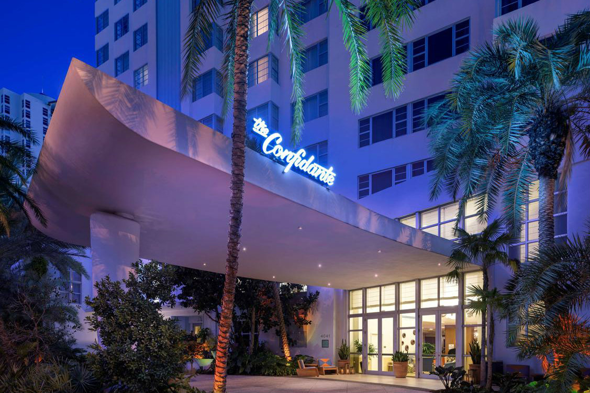

With deep historical roots in Miami Beach, The Confidante is a three-towered property that pays homage to the vibrant feeling of the city in the 1950s.
Serving at one time as the tallest modern building in Miami Beach, The Confidante originally opened as the 18-floor Lord Tarleton Hotel on Collins Avenue, making headlines and representing a boom for the city’s economy. In 1955, it reopened as the Crown Hotel and later was converted into a three-tower apartment building. The hotel operated as Thompson Miami Beach from November 2014 through April 2016.
The Unbound Collection by Hyatt provides guests with social currency and story-worthy experiences. With that in mind, The Confidante provides a playful and sophisticated backdrop, much like a friend’s beach house, where guests can get away and relax while enjoying the vibrancy and energy of Miami Beach.
Situated as an oasis in close proximity to South Beach, The Confidante features 30 suites, two restaurants -- the Asian-American TALDE Miami Beach and Bird & Bone -- two heated swimming pools, direct beach access, a rooftop spa, a full service salon by Warren-Tricomi, an indoor/outdoor fitness experience, in-room dining, a craft cocktail bar, and a lush tropical garden. It also houses approximately 35,000+ square feet of indoor and outdoor flexible, multi-functional venue space.